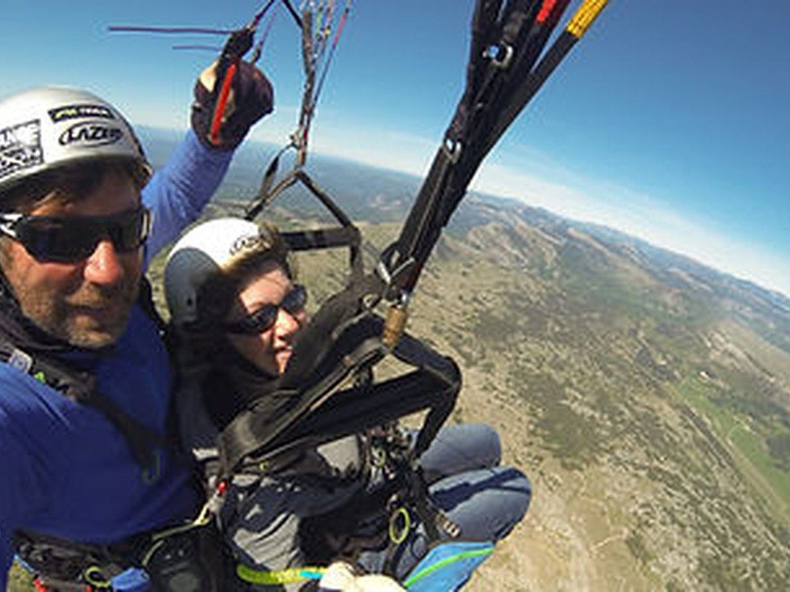

Découverte · tout public dès 25 kg
Vol Découverte
Votre premier vol, installé devant Patrick, moniteur diplômé d'État. Quelques pas pour décoller depuis Gourdon, puis la vue sur toute la Côte d'Azur, de l'Estérel au Cap Ferrat.
Voir les formules →